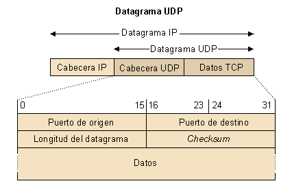

Como ya hemos comentado anteriormente, el protocolo UDP es un protocolo no orientado a la conexión, de manera que no proporciona ningún tipo de control de errores ni de flujo, aunque sí utiliza mecanismos de detección de errores. En caso de detectar un error, el UDP no entrega el datagrama a la aplicación, sino que lo descarta.
¿Por qué debe definirse un protocolo de estas características? Es necesario recordar que por debajo del UDP está utilizando el protocolo IP, que también es un protocolo no orientado a la conexión. Por lo tanto, se pensó en definir un protocolo del nivel de transporte que permitiera que la aplicación explotara este tipo de características y que fuera tan simple y sencillo como fuera posible.
EL UDP es un protocolo no orientado a la conexión. Esto significa que cada datagrama UDP existe independientemente del resto de los datagramas UDP.
La simplicidad del UDP hace que sea ideal para aplicaciones que requieren pocos retrasos (por ejemplo, aplicaciones en tiempo real). EL UDP también es ideal para los sistemas que son tan limitados que no pueden implementar un sistema tan complejo como el TCP.
La siguiente figura muestra la unidad de datos del protocolo UDP y su encapsulamiento en un datagrama IP. Cada operación de salida de un datagrama UDP provoca la generación de un datagrama IP.

El datagrama UDP consta de una cabecera y un cuerpo para encapsular los datos. La cabecera consta de los siguientes elementos:
- Los campos puerto de origen y puerto de destino, que identifican las aplicaciones en los terminales de origen y de destino. Cada puerto tiene 16 bits.
- El campo longitud indica la longitud en octetos del datagrama UDP, incluyendo la cabecera UDP (es la diferencia de la longitud del datagrama IP menos la cabecera IP). Puesto que la longitud máxima de un datagrama IP es de 65.535 bytes, con una cabecera estándar de 20 bytes, la longitud máxima de un datagrama UDP es de 65.505 bytes.
- El campo checksum (16 bits) es opcional y protege tanto la cabecera como los datos UDP (se debe recordar que el checksum del datagrama IP sólo cubre la cabecera IP). Cuando el UDP recibe un datagrama y determina que hay errores, lo descarta y no lo entrega a ninguna aplicación.
Como hemos visto, el UDP no proporciona una entrega de información segura y fiable a la aplicación. Sin embargo, puede haber aplicaciones, por ejemplo, interesadas en transmitir información en modo multicast o broadcast (a un grupo de usuarios o a todos los usuarios de la Red). En este caso, sí que tiene sentido enviar la información a muchos receptores sin esperar una respuesta de todos, de manera que es ideal disponer de un protocolo de transporte simple y sencillo no orientado a la conexión como el UDP.
Por otro lado, alguien podría preguntarse qué ofrece realmente el UDP con respecto al IP, es decir, por qué se debe utilizar el UDP si el IP también ofrece una conexión en modo datagrama. La respuesta es que el UDP ofrece un servicio de multiplexación en las aplicaciones que el IP no ofrece. Por ejemplo, ¿qué sucede si varias aplicaciones quieren comunicarse con otras aplicaciones en máquinas remotas sin utilizar un servicio fiable como el TCP? El IP identifica la estación remota, sin embargo, ¿cómo se pueden identificar las aplicaciones destino en la estación remota? La solución consiste en utilizar el UDP y las direcciones puerto para multiplexar la información. Con la dirección puerto es posible identificar cuál es la aplicación de destino en la estación remota.